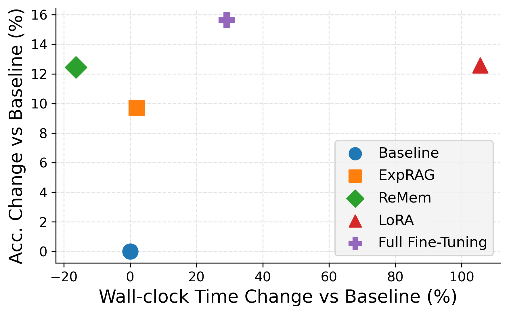

Navigating the Cost-Performance Pareto Frontier of Test-Time LLM Agent Adaptation
ICLR 2026 Lifelong Agent Workshop
Compares in-context adaptation and RL fine-tuning for LLM agents with verifiable feedback, summarized as an accuracy vs. adaptation compute Pareto frontier. Adaptation helps most when tasks benefit from improved reasoning with the model's existing knowledge, but offers limited gains when they demand learning new facts.